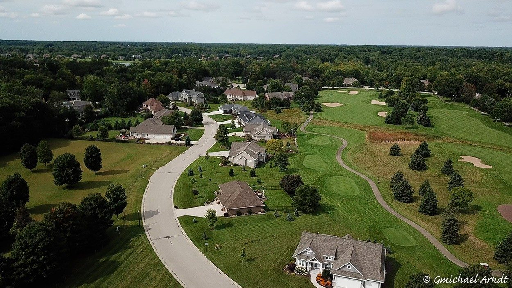
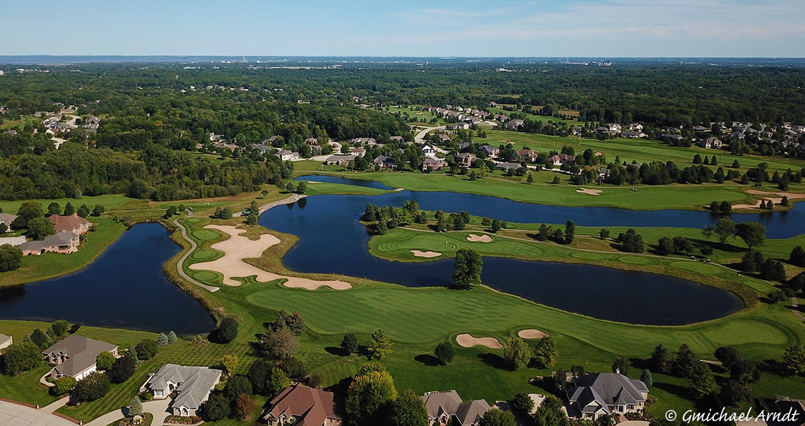

A volunteer organization of residents, working year-round to promote a safe and beautiful place to live, with a spirit of community.
The Thornberry Creek Community Association (TCCA) is a volunteer organization made up of residents of Thornberry Creek.
Thornberry Creek Estates is a family-friendly community located just outside Green Bay, Wisconsin. It is a premier residential community with over 200 single family homes adjacent to the Thornberry Creek at Oneida Golf Course.
It is a great place to live, a great place to enjoy outdoor activities, and a great place to meet neighbors and raise a family. Our mission is to promote a safe and beautiful place to live, with a spirit of community.
Get Involved
Four ways we work to support residents and protect the character of the neighborhood.
Creating activities where neighbors meet neighbors and develop friendships: the Tailgate Party, the Golf Outing, Flamingo Parties, the Holiday Party, the bi-annual Rummage Sale, and child-friendly events.
Adopting the covenants as guidance to ensure consistency across our neighborhood and to help protect property values, with Village of Hobart ordinances as our guide where applicable.
Mailed letters and postcards, flyers delivered to homes, this website, and the TCCA Facebook group, covering community activities, philanthropic efforts, and newsworthy topics.
Maintaining the four entrances at Hillcrest, Pine Tree, Crooked Stick, and Trout Creek, plus dog stations and general items that enhance the look of the community. This is a major priority and expense for the association.
Your neighbors who give their time to keep the association running. We are always glad to welcome new volunteers.
Leads the Association Board of Directors. Establishes the tone and priorities, sets agenda for board meetings. Addresses all legal and insurance requirements for the association. Crafts and communicates Association Standards. Responds to resident inquiries. Represents the association with the Village of Hobart and the Thornberry Creek at Oneida Golf Course.
Crafts communications. Supports the association's projects and events. Provides direction for TCCA website updates and Facebook posts.
Documents all board meetings and communicates minutes to association members. Maintains ongoing records of the minutes. Organizes and coordinates the Holiday Party for members.
Maintains and reports on the association's budget. Serves as the key liaison with the association's designated banking resources. Reimburses board members for association expenses incurred. Maintains the association's Facebook page.
Creates the landscaping plan for the association's four entrances. Sources resident volunteers to help plant, water, maintain and decorate the entrances throughout the year. Engages with lawn care and tree professionals. Organizes family events throughout the year.
Welcomes new members. Creates communications and mailings to members and residents. Maintains membership records. Supports the annual membership mailing to all residents. Monitors the association's post box. Deposits payments to the TCCA bank account. Organizes and coordinates the Holiday Party for members.
Addresses all inquiries related to new and renovated building structures and provides guidance in keeping with our standards. Maintains all guidance documents and responds to resident inquiries on related matters.
Orchestrates the association's special events, such as the Golf Outing and philanthropic efforts.
Provides guidelines and assists with the development and execution of community events.
Provides guidelines and assists with the development and execution of community events.
As you can see, your volunteer board members are very busy. If you are interested in assisting with any association event or ongoing committee, please reach out to us via our email: info@thornberrycreekcommunity.com
Board contact: Have a question for the association? Email us anytime at info@thornberrycreekcommunity.com, or see the Important Contacts page.
The simple values behind everything the association does.
"To promote a safe and beautiful place to live, with a spirit of community."
Safety for our residents and our children is a priority for the association and all our residents. Promoting safety is everyone's job.
Lawns and landscaping maintained, entrances planted and watered by volunteers, and shared spaces cared for, given the impact on community aesthetics.
TCCA works to build cooperative relationships with our residents, addressing issues and seeking resolutions that represent all residents and result in win/win outcomes.
Come to a meeting, lend a hand at an event, or simply introduce yourself. There's a place for you here.